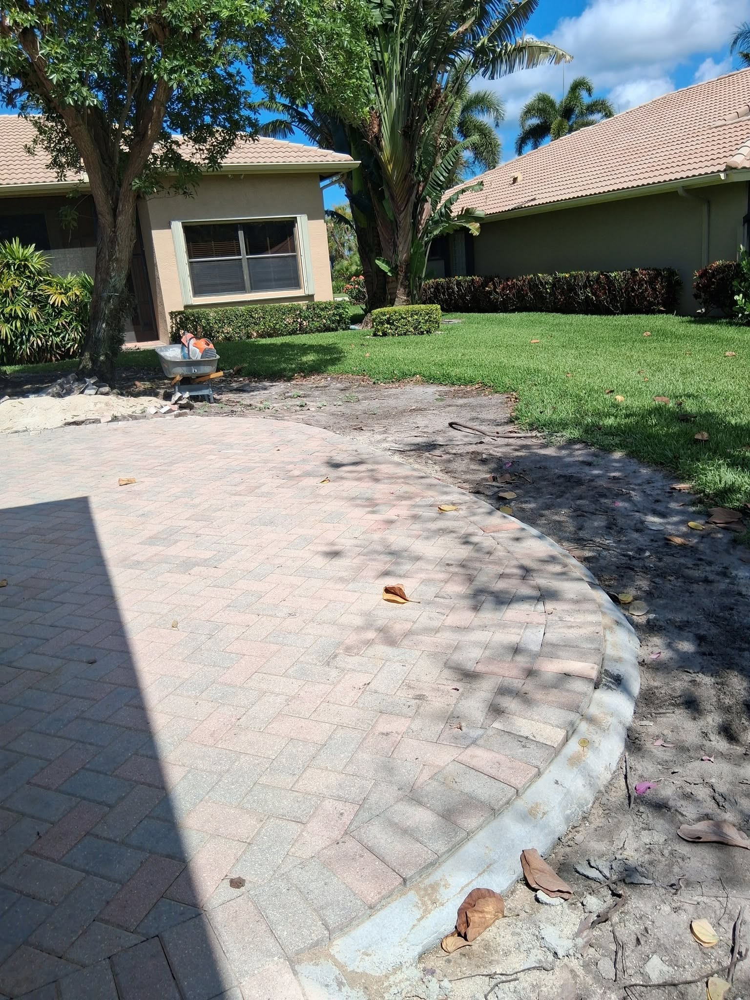

If you're designing or renovating a pool area in West Palm Beach, there's one material that stands above the rest: travertine. This natural limestone has been used around water for centuries — from ancient Roman baths to luxury resorts across Florida — and for very good reasons. Here's why travertine is our top recommendation for pool decks in Palm Beach County.
It Stays Cool in Florida's Heat
This is the single biggest advantage of travertine over concrete or standard pavers. Travertine has a naturally porous, crystalline structure that reflects heat instead of absorbing it. On a hot July afternoon in West Palm Beach, concrete pavers can reach 140–160°F — painful to walk on barefoot. Travertine in the same sun will typically stay 30–40°F cooler.
For a pool deck where bare feet are the norm, this isn't just comfort — it's a safety concern. Travertine eliminates the "hot feet" problem that plagues so many South Florida pool areas.
Naturally Slip-Resistant When Wet
Pool safety is a top priority, and travertine's naturally textured surface provides excellent traction even when completely wet. Unlike polished stone or smooth concrete, travertine's micro-texture grips the foot. Most pool-grade travertine comes in a "tumbled" or "brushed" finish that enhances this grip further.
Safety Note: Always specify "tumbled" or "brushed" finish travertine for pool decks — never "honed" or "polished," which can become slippery when wet.
Aesthetic Beauty That Elevates Any Pool Area
Travertine's warm ivory, cream, and golden tones create an immediate resort-like atmosphere around any pool. The natural color variation within each tile means no two installations look exactly the same — you get a one-of-a-kind outdoor space with a timeless, upscale appearance.
It pairs beautifully with tropical landscaping, modern architectural lines, and Mediterranean-style homes — all extremely common design styles across Palm Beach County.

Maintenance Requirements
Travertine requires more care than concrete pavers. Here's what to plan for:
- Sealing: Apply a penetrating sealer every 1–2 years to prevent staining from pool chemicals, sunscreen, and organic matter.
- Cleaning: Use a pH-neutral cleaner and avoid acidic products (vinegar, citrus-based cleaners) which can etch the stone surface.
- Grout joints: Check periodically for cracking or color loss; re-grout as needed to prevent water intrusion.
- Filling voids: Travertine's pores are typically pre-filled at the factory, but inspect annually and refill with matching grout if needed.
Cost and Installation
Travertine pool decks typically cost $20–$35 per square foot installed in the West Palm Beach area, depending on tile size and site conditions. The installation process requires a properly prepared concrete base, waterproof membrane, and premium polymer-modified adhesive mortar — not the same as a standard dry-set paver installation.
This is not a DIY project. A proper travertine pool deck installation requires experienced stone masons who understand the material's specific requirements. Poor installation leads to loose tiles, cracked grout, and drainage problems that are expensive to fix.
Is Travertine Right for Your Pool?
Travertine is the right choice if you want the most beautiful, coolest, and most slip-resistant pool deck available. If budget is the primary concern, high-quality concrete pavers in a light color are also an excellent option. The Pavers Ordonez team can walk you through both choices with samples and pricing during your free consultation.